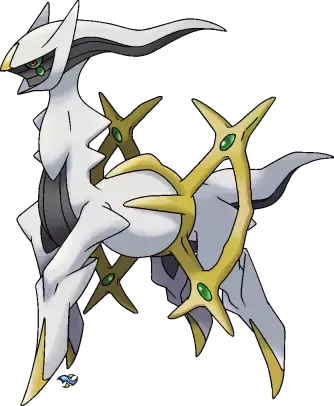
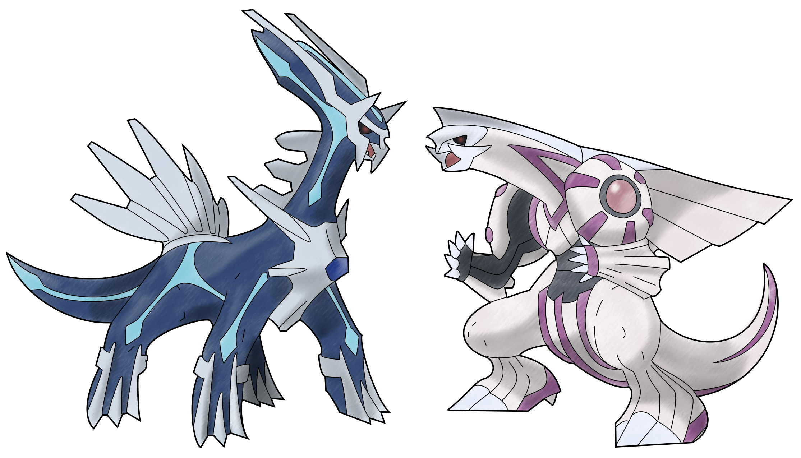

Nummer 1 Arceus
Han er faktisk GUD, hva mer trenger du å vite? 
Nummer 2 Dialga og Palkia
Disse to styrer UNIVERSET, det sier en del av seg selv.
Nummer 3 Giratina
Han styrer antimaterie og den vridde verden som han ble sendt til fordi han var for sterk
Nummer 4 mega rayquaza
mens de på top 3 styrer veldig store og litt uvirkelige ting styrer denne superkraftige pokemonen himmelen.
Nummer 5 Primal Groudon
Denne pokemonen styrer kontinentalplatene, tenk på all kraften det krever. den skapte også jorde med sin søsterpokemon Kyogre.
Nummer 6 Mega MewTwo X
Denne pokemonen er ikke den sterkeste, men av alle de normale pokemonsene, altså ikke legendariske er denne den beste!
Nummer 7 Ultra Necrozma
Ultra Necrozma kan ta kraften fra de to under på denne lista og slå det sammen, det er mye kraft.
Nummer 8 lunala og solgaleo
disse to har navnene Solguden og Månedronningen ikke uten grunn, dessuten har de z krefter som er sterkere enn de fleste andre.
Nummer 9 Regigas
Regigas kan dra et helt kontinent gjennom havet, mens både kyogre og groudon passet på.
Nummer 10 den originale dragen
denne dragen er en sammenslåing av TRE legendariske pokemons, og den skapte unova kongeriket. den fortjener ihvertfall en 10ende plass på lista!